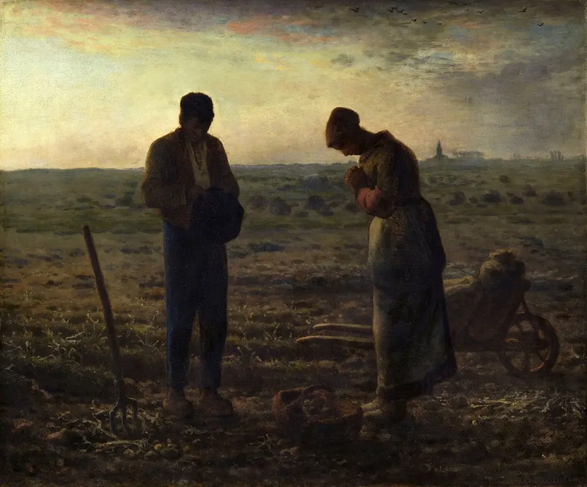
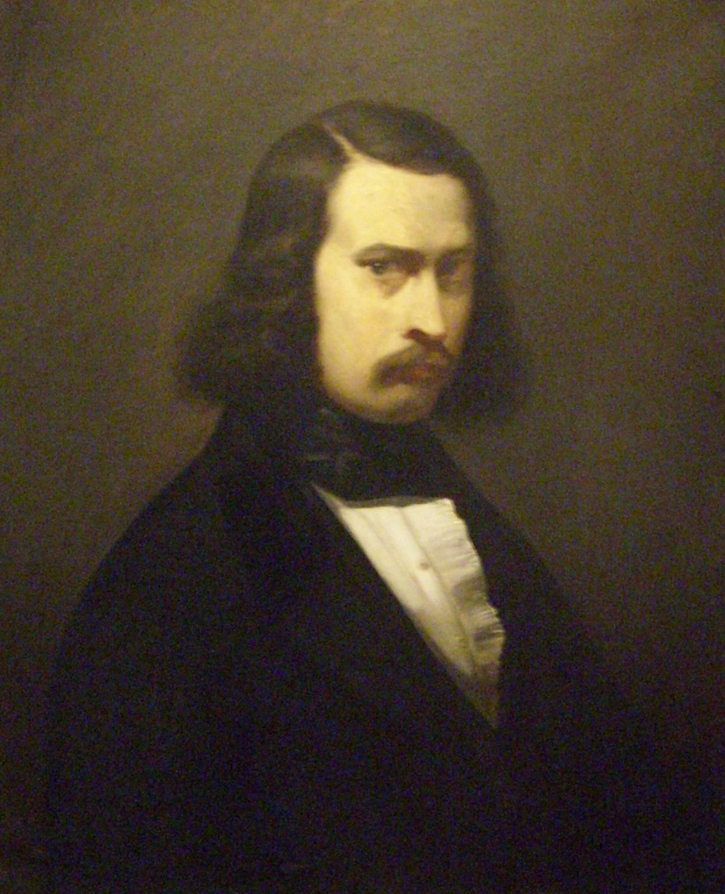
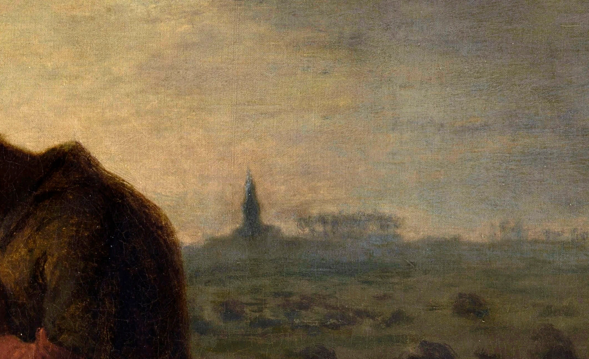
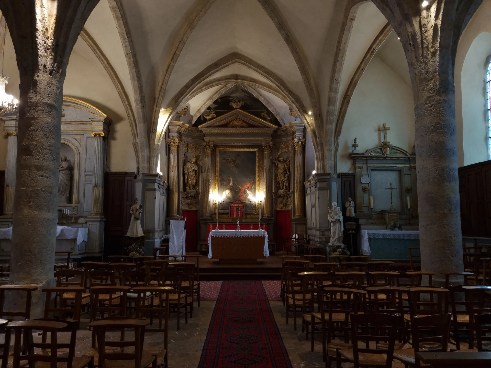
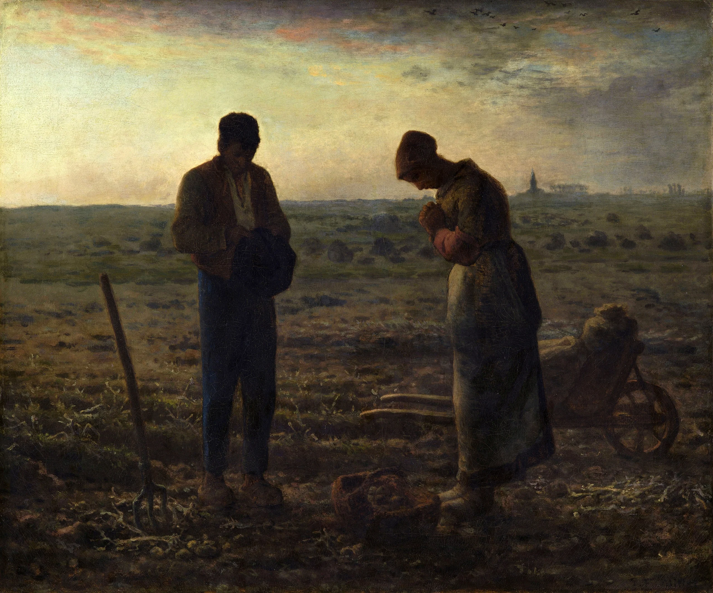
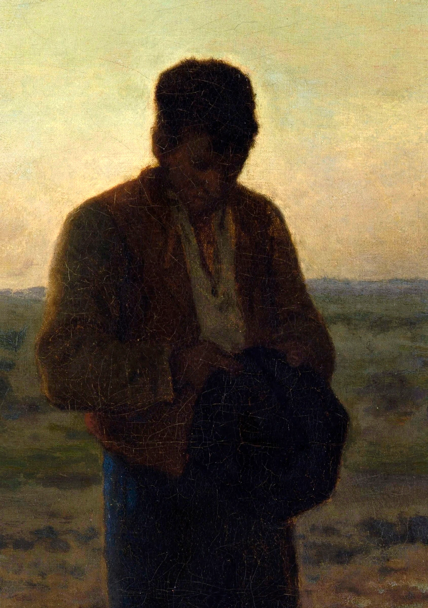
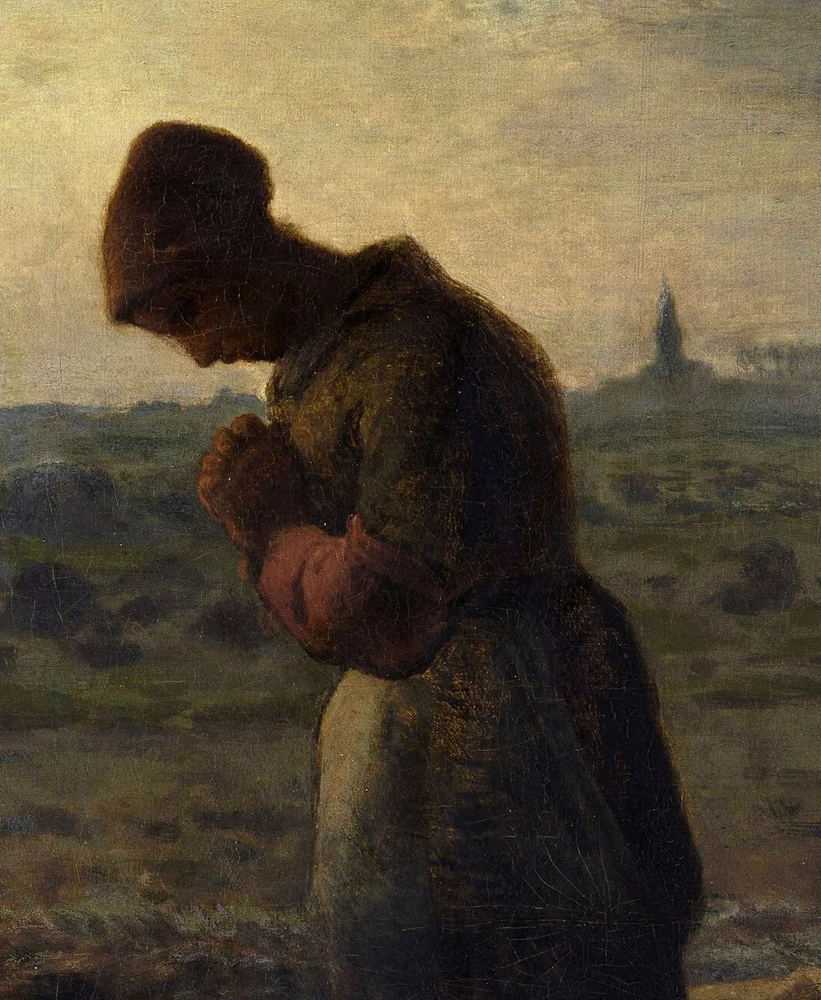

아직 펼치지 않은 카드빛과 어둠 사이의 얼굴 · 6밀레 「만종」저녁 종이 울리자 밭에서 일하던 부부가 일손을 멈췄어요. 이 그림은 화가의 어떤 기억에서 나왔을까요?종소리가 들리자 일을 멈추고 기도하는 부부야.
1857~1859년프랑스 바르비종 곁 샤이 들판 · 지금은 파리 오르세 미술관
밀레 「만종」
해 질 녘, 멀리 종탑에서 저녁 종이 울려요. 감자를 거두던 두 사람이 일손을 멈추고 고개를 숙여요. 밀레(Millet)가 어린 시절 들에서 듣던 그 종소리예요. 마지막 햇빛처럼, 그늘 속에 숨은 손과 연장을 하나씩 비춰 보세요.
저녁 종이 울리자 밭에서 일하던 두 사람이 기도해. 밀레 아저씨는 어릴 때 할머니와 함께 듣던 종소리를 그렸대. 우리도 빛을 비춰서 숨은 것들을 찾아볼까?
검수 전 시안이에요(기준서 1판). 밀레와 다른 사람들이 남긴 말은 프랑스어·영어 기록에서 뜻을 옮겼어요. 종소리는 이 안내서가 만든 소리예요. 상상은 ‘눈 감고 상상해 보기’에만 썼어요.
시안 확인용카드 단계 미리 보기
1
할머니가 멈추게 한 일손
장프랑수아 밀레(Jean-François Millet)는 1814년 프랑스 노르망디의 그레빌 마을, 그뤼시라는 작은 마을에서 태어났어요. 아버지 쪽은 대대로 자기 땅을 일구어 온 농사꾼 집안이었어요.
1896년에 밀레의 삶과 편지를 책으로 엮은 줄리아 카트라이트(Julia Cartwright)는, 밀레의 가장 이른 기억에서 가장 큰 자리를 차지한 사람이 할머니 루이즈 쥐믈랭(Louise Jumelin)이었다고 적었어요.

“「만종」은, 예전에 들에서 일할 때 할머니가 종 치는 소리를 들으면 빠짐없이 우리 일손을 멈추게 하고 그 가엾은 죽은 이들을 위해 삼종기도를 드리게 했던 일을 생각하며 그린 그림이에요.”
밀레가 1865년에 한 말 · 오르세 미술관 작품 설명에서 · 프랑스어에서 이 안내서가 옮김
오르세 미술관은 이 그림이 신앙심을 드높이려는 뜻이 아니라 어린 시절의 기억에서 나왔다고 설명해요. 그러면서 밀레가 성당에 꼬박꼬박 나가는 신자는 아니었다고 덧붙여요.
밀레 아저씨가 어릴 때, 종이 울리면 할머니가 일을 멈추고 기도하게 했대. 그 기억으로 이 그림을 그렸어.
물어보기종소리가 들리면 할머니는 무엇을 하자고 했을까?
2
들판 너머 종탑
그림 오른쪽 지평선에 뾰족한 종탑이 보여요. 이 고장의 가티네 프랑스 지역 자연공원이 펴낸 성당 자료는, 밀레가 이 그림을 바르비종 곁 마을 샤이앙비에르(Chailly-en-Bière)에서 그렸다고 적어요. 그림 속 종탑도 그 마을 성당의 종탑일 거라고 해요.
그 성당은 사도 바오로에게 바친 생폴 성당이에요. 지금 건물은 12~13세기에 지었고, 1765년에는 국왕 루이 15세가 내린 돈으로 고쳤어요. 제단 위에는 18세기 그림 「성 바오로의 회심」이 걸려 있어요. 사도행전 9장이 전하는, 바오로(바울)가 다마스쿠스로 가는 길에서 예수의 음성을 듣고 믿게 된 일을 그린 그림이에요.


이 종이 알리던 기도를 한국 천주교에서는 ‘삼종기도’라고 불러요. 하루 세 번, 아침 6시와 낮 12시와 저녁 6시에 종을 세 번씩 치며 바치는 기도예요(바티칸 뉴스 한국어판).
‘안젤루스(Angelus)’라는 이름은 라틴어 기도문 첫머리 “Angelus Domini nuntiavit Mariae(주님의 천사가 마리아께 아뢰니)”에서 왔어요. 1907년 가톨릭 백과사전은 사이를 두고 세 번씩 세 번 치는 방식이 처음부터 쓰인 것 같다고 적어요.
저 멀리 뾰족한 탑이 성당 종탑이야. 하루에 세 번, 아침과 점심과 저녁에 종이 울렸대.
물어보기종은 하루에 몇 번 울렸을까?
3
해 질 녘, 멈춘 손
두 사람은 감자를 거두다가 일손을 멈추고 삼종기도를 바쳐요. 오르세 미술관은 이 기도가 천사가 마리아에게 인사하며 예수의 잉태를 알린 일, 곧 ‘수태고지’(누가복음 1장)를 떠올리는 기도라고 설명해요.
두 사람 뒤 하늘은 아직 밝아요. 오르세 미술관은 밀레가 얼굴을 그늘에 두고, 빛으로 몸짓과 자세를 드러냈다고 설명해요.
해 질 녘 마지막 빛처럼, 손가락이나 마우스로 문질러 비춰 보세요. 숨은 곳이 다섯 군데 있어요.

장프랑수아 밀레, 「만종」, 1857~1859년, 캔버스에 유채, 55.5×66cm · 파리 오르세 미술관 · 그림: 장프랑수아 밀레 · 퍼블릭 도메인 · 위키미디어 공용
빛이 닿으면 숨은 표시가 나타나요.
다 비췄어요. 얼굴은 그늘 속에 남고, 빛은 모자를 든 손과 모은 손에 머물러요. 아래 단추로 저녁 종소리를 들으며 잠깐 멈춰 보세요.
“종소리가 들리나요? 아, 그럼 됐어요. 나는 만족해요.”
밀레가 처음 이 그림을 본 친구 상시에에게 한 말 · 줄리아 카트라이트, 『밀레의 삶과 편지』(1896) 180~181쪽 · 영어에서 이 안내서가 옮김
친구이자 훗날 밀레의 전기를 쓴 알프레드 상시에(Alfred Sensier)가 그림을 처음 보고 “아니, 삼종기도로군요!” 하자, 밀레가 흡족해하며 한 말이라고 카트라이트는 적었어요.
오르세 미술관은 밀레가 이 그림에서 농부들의 늘 같은 하루의 흐름을 붙잡으려 했고, 일하는 때보다 멈추어 쉬는 때에 마음을 두었다고 설명해요.
종소리가 들리자 두 사람이 일을 멈추고 기도해. 손으로 빛을 비춰 볼까? 종소리도 들어 보자.
물어보기빛을 비추니까 두 사람 발밑에 무엇이 있었어?
4
끝없는 종소리
이 그림은 1857년 무렵 미국 사람 토머스 골드 애플턴(Thomas Gold Appleton)이 주문했어요. 하지만 그는 그림을 찾아가지 않았어요(오르세 미술관).
1860년, 바르비종에 자주 오던 벨기에 화가 파펠뢰 남작(Baron de Papeleu)이 2,500프랑에 샀어요(카트라이트). 그리고 같은 해에 벨기에의 장관 반 프라트(Van Praet)의 손에 들어갔어요(오르세 미술관 소장 기록).
“이 두 농부 앞에 서면 누구나 이웃 성당의 종소리를 듣는 것 같지요. 그 끝없는 종소리가 결국 나를 거슬리게 했어요.”
벨기에 장관 반 프라트의 말 · 나폴레옹 재단 누리집(카린 위게노, 2010) · 프랑스어에서 이 안내서가 옮김
나폴레옹 재단의 글에 따르면, 반 프라트는 1864년 이 그림을 밀레의 다른 그림 「양 떼와 함께 있는 양치기 소녀」와 바꾸며 농담처럼 이 말을 했어요.
어떤 아저씨는 이 그림을 보면 종소리가 자꾸 들리는 것 같아서, 다른 그림과 바꿨대.
물어보기이 그림을 보면 너도 종소리가 들리는 것 같아?
눈 감고 상상해 보기
해가 지평선으로 내려가요. 들판은 금빛과 잿빛으로 물들고, 갈아엎은 흙냄새가 올라와요. 멀리서 종이 세 번 울리고, 조용해졌다가 다시 세 번 울려요. 쇠스랑을 땅에 세워 두고 모자를 벗어요. 바구니도 손수레도 그대로 둔 채, 잠깐 고개를 숙여요.
눈을 감아 봐. 해가 지고 있어. 멀리서 땡, 땡, 땡 종이 울려. 모자를 벗고, 두 손을 모으고, 잠깐 조용히 있어 보자.
나의 자리
하루 가운데 일손을 멈추고 고개를 숙이는 나만의 ‘종소리’는 언제인가요?
하루에 잠깐 멈추고 감사하는 시간이 있어?
마음에 닿는 한 줄을 고르거나 직접 써 보세요. 한 줄을 남기면 이 자리의 도장이 찍혀요. 이 기기에만 저장돼요.
더 깊이
궁금한 칸만 펼쳐 읽어도 괜찮아요.
알고 보면
할머니의 아침 인사 카트라이트에 따르면 할머니 루이즈 쥐믈랭은 성인들을 본보기 삼아 하루하루를 살았어요. 어린 밀레를 깨울 때면 “일어나라, 우리 프랑수아! 새들은 벌써부터 좋으신 하느님의 영광을 노래하고 있단다” 하고 말했대요(영어에서 이 안내서가 옮김).
오르세까지 반 프라트 뒤에 그림은 열 명의 주인과 화상의 손을 거쳤어요. 1909년 알프레드 쇼샤르(Alfred Chauchard)가 유언으로 나라에 남겨 루브르 박물관에 들어갔고, 1986년부터는 오르세 미술관에 있어요.
밀레가 잠든 마을 밀레는 1875년 샤이앙비에르에 묻혔어요. 그림 속 종탑이 서 있다고들 하는 바로 그 마을이에요. 화가 테오도르 루소도 1867년에 이 마을에 묻혔어요(가티네 지역 자연공원).
프랑스의 종 이름 1907년 가톨릭 백과사전은 프랑스에서는 삼종 종에 ‘아베 마리아’라는 이름이 붙는 일이 흔했던 것 같다고 적어요. 아베 마리아는 천사의 인사(누가복음 1장 28절)로 시작하는 기도 ‘성모송’의 라틴어 첫머리예요.
가까이 보면


남자 모자를 벗어 두 손으로 들었어요. 밝은 하늘을 등지고 있어서 얼굴은 그늘에 묻혔어요.
여자 두 손을 가슴 앞에 모으고 고개를 깊이 숙였어요. 걷어 올린 소매와 흰 앞치마에 빛이 닿아 있고, 어깨 너머 지평선에 종탑이 보여요.
기록마다 다른 점
누가 일손을 멈추게 했나 밀레가 1865년에 한 말에는 할머니가 나와요. 카트라이트의 1896년 전기에는, 저녁 종이 울리면 모자를 벗어 든 아버지와 두 손을 모은 어머니의 모습이 밀레의 아주 이른 기억이었다고 적혀 있어요.
주문한 사람 오르세 미술관은 미국 사람 애플턴이 주문하고 찾아가지 않았다고 적어요. 카트라이트는 이름을 밝히지 않은 채, 처음 그림을 맡긴 사람이 완성된 그림에 실망해 사지 않았다고 적어요.
종탑은 어디 가티네 지역 자연공원의 자료는 샤이앙비에르의 종탑일 거라고 해요. 오르세 미술관의 작품 설명은 성당 이름을 적지 않아요.
1864년의 맞바꿈 나폴레옹 재단의 글은 반 프라트가 그림을 양치기 소녀 그림과 바꾸었다고 적어요. 오르세 미술관의 소장 기록은 1864년부터 폴 테스(Paul Tesse)가 가졌다고 적고, 양치기 소녀 그림과의 맞바꿈을 그 줄에 함께 적어요.
직접 가 보기
확인한 날 · 2026년 11월 18일 · 바뀌기 쉬운 정보라 정기적으로 다시 확인해요
「만종」은 파리 오르세 미술관에 있어요. 미술관 작품 설명에는 땅과 같은 높이의 층(우리식 1층) 4번 방이라고 나와요.
파리 지역 관광청 안내에 따르면 미술관은 화요일부터 일요일까지 9시 30분부터 18시까지 열고(마지막 입장 17시), 목요일은 21시 45분까지 열어요. 5월 1일과 12월 25일은 닫아요.
18살 아래는 무료이고, 매달 첫 일요일에는 누구나 무료로 들어가요. 가기 전에 미술관 누리집에서 다시 확인하세요.
빛으로 찾은 다섯 곳 금박
해 질 녘 빛처럼 그림을 비춰 숨은 다섯 곳을 모두 찾으면 카드에 금박이 입혀져요.
빛을 비춰 숨은 다섯 곳 모두 찾기
종이 울리면 멈추기 채색
그림 속 두 사람처럼 저녁 종소리에 잠깐 멈추거나, 아이와 함께 끝까지 보면 카드가 채색돼요. 둘 가운데 하나만 해도 돼요.
‘해 질 녘, 멈춘 손’에서 저녁 삼종 소리 듣기
아이와 함께 ‘영화처럼 보기’를 끝까지 보기
근거 보기 (10)
- 오르세 미술관 작품 설명: L’Angélus(RF 1877) — 1857~1859년, 55.5×66cm, 1865년 밀레의 말(할머니·가엾은 죽은 이들), 애플턴의 주문과 찾아가지 않음, 수태고지를 떠올리는 기도, 감자 수확과 연장(쇠스랑·바구니·자루·손수레), 얼굴은 그늘·빛은 몸짓과 자세, 늘 같은 흐름·멈춤과 쉼, 신앙을 높이려는 뜻이 아닌 기억, 밀레는 신자가 아님, 소장 기록(1860 파펠뢰·스티븐스·반 프라트, 1864 테스와 맞바꿈, 1909 쇼샤르 유증, 1986 오르세), 1층 4번 방
- 나폴레옹 재단(카린 위게노, 2010년 3월, 2025년 고침): L’Angélus — 샤이 들판, 저녁 삼종, 파리에 머물던 미국인 애플턴, 1860 반 프라트, 1864 「양 떼와 함께 있는 양치기 소녀」와 맞바꿈과 그의 말, 열 명의 주인과 화상, 1909 쇼샤르
- 줄리아 카트라이트, 『Jean François Millet: his life and letters』(1896) — 1814년 10월 4일 그레빌의 그뤼시 출생, 농사꾼 집안, 할머니 루이즈 쥐믈랭과 아침 인사, 저녁 종의 아버지·어머니(180쪽), 상시에와 나눈 말(180~181쪽), 처음 주문자의 거절, 파펠뢰 남작 2,500프랑
- 가톨릭 백과사전(1907): Angelus — 강생을 기리는 기도, 아침·정오·저녁 종소리에 맞춰 하루 세 번
- 가톨릭 백과사전(1907): Angelus Bell — 사이를 두고 세 번씩 세 번 치는 방식, 프랑스에서 흔한 종 이름 ‘아베 마리아’
- 바티칸 뉴스 한국어판(2025년 6월): 삼종기도 풀이 — 하루 세 번(6시·12시·18시) 종을 세 번씩, 이름은 라틴어 첫머리 Angelus Domini nuntiavit Mariae
- 가티네 프랑스 지역 자연공원, 샤이앙비에르 생폴 성당 자료(2016, 건축가 알리스 르죈): 밀레가 샤이에서 그림, 종탑은 샤이의 것일 거라 함, 12~13세기 건물, 1765년 루이 15세의 돈으로 고침, 18세기 「성 바오로의 회심」, 루소(1867)·밀레(1875)가 묻힘
- 파리 지역 관광청(전문가용 안내): 오르세 미술관 여는 시간·마지막 입장·목요일 늦게까지·쉬는 날·무료 대상·요금
- 에로도트(카미유 비뇰, 2021): 밀레 — 노르망디 농부로 살다 셰르부르의 학교로 감, 「만종」 1859년
- 영어 위키백과: The Angelus (painting) — 길잡이로만(애플턴, 반 프라트, 상시에와 나눈 말)
그림·사진·소리 출처
- 그림: 장프랑수아 밀레 · 퍼블릭 도메인 · 위키미디어 공용
- 그림: 장프랑수아 밀레 · 퍼블릭 도메인 · 위키미디어 공용
- 그림: 장프랑수아 밀레 · 퍼블릭 도메인 · 위키미디어 공용
- 사진: Loutre Lettrée · CC0 · 위키미디어 공용
- 그림: 장프랑수아 밀레 · 퍼블릭 도메인 · 위키미디어 공용
- 그림: 장프랑수아 밀레 · 퍼블릭 도메인 · 위키미디어 공용
- 그림: 장프랑수아 밀레 「만종」(1857~1859) · 퍼블릭 도메인 · 위키미디어 공용
- 「저녁 삼종 소리」 · 이 안내서가 만든 소리(교회 종의 배음을 컴퓨터로 합성, 세 번씩 끊어 세 번)
‘처음 만나는 기독교 문화’의 깊은 카드예요. 사람 얼굴이 알아볼 만큼 나오는 사진은 쓰지 않았어요. 카드 단계와 남긴 글은 이 기기에만 저장돼요.